Gauntlet progress
Platform core, judged piece by piece against the owner's bar and Odoo Community. Rebuilt from gauntlet/verdicts/ by gauntlet/tools/record.mjs. Full evidence in ledger.md; owner items in needs-human.md.
Foundation and hard gates
Wave 0 · 9 rounds judgedEvery module that posts foreign-currency amounts (purchases in USD or EUR, the everyday case for a UAE trading company) will build on the kernel Money type. docs/compliance/vat-rounding-and-currency.md rule 2, signed off by the owner, says: 'Rounding happens once, on the figure that is stated. Lines and tax-category subtotals keep their full precision; the invoice total is rounded to 2 decimals.' The kernel breaks this in two ways. (a) Money.Create rounds each base amount to the fils, and Money.Add sums those rounded amounts (BaseAmount + other.BaseAmount). Example: three lines of USD 1.00 at 3.6725 give 3.67 + 3.67 + 3.67 = AED 11.01, but the rule gives 11.0175, rounded to 11.02. (b) Money.Create throws on any amount with more decimals than the currency's minor units, so a line cannot keep full precision at all. Round 9 reported this and it is still open (round 10 only factored out RoundToMinorUnits). Fix in the kernel before p08 and the ledger build on it: keep line and subtotal base amounts at full precision (or carry the unrounded product), round only the stated total, and have the type report the rounding difference that e-invoices put in 'Rounding Amount'. This is a rule already signed off, so implementing it needs no new human gate.
- G3 clean clone: ./erp verify (build, migrate, seed, every test) PASS — Fresh clone of c4cfacb at /home/shan/critic/p00-foundation-r10. Command: ERP_PROJECT=c-p00-foundation-r10 ERP_HTTP_PORT=20050 ERP_DB_PORT=20051 ERP_VERIFY_HTTP_PORT=20060 ERP_VERIFY_DB_PORT=20061 verify-slot.sh ./erp verify. It took slot 1 at 2026-10-16T20:44:29Z after waiting 0 s and ended 'verify passed in 3983 s'. Stages: dotnet 3396 s, web 2038 s, e2e 3926 s, timing 54 s. 'Ratchet check passed.' Processor time was 9,512 s against the 10,500 s maximum (dotnet 7516, web 1713, e2e 247, timing 37). Wall time was not judged because the machine was busy (load up to 95). Log: verify-critic-p00-foundation-r10.log.
- G3 clean clone: ./erp up (running seeded demo) PASS — ERP_PROJECT=c-p00-foundation-r10 ERP_HTTP_PORT=20050 ERP_DB_PORT=20051 ./erp up served http://localhost:20050 in 77 s (78 s wall) while a verify ran beside it. It seeded alnoor with 100,005 users in 44.6 s, plus gulfsteel (1,005 users), and printed the demo sign-ins. The port and project overrides were honoured (erp-up.log). ./erp tenant create made the empty Arabic workspace emptyco in 7.6 s (tenant-create.txt).
- G1 tenant isolation: critic's live attack (API, documented query parameters, Bearer, exports, files, side channels, DB role) PASS — attack/attack.mjs (the r9 critic's script, logic unchanged) ran as the alnoor admin (A) against gulfsteel (B). B first made a canary user, 10 saved views, a company logo, 5 roles and 5 users. A then sent 109 operations with B's ids, 686 documented query-parameter requests, 465 tenant-switch requests, 100 export requests and 35 filter requests. Result: LEAKS 0. No id appeared in both tenants' answers. B's per-table md5 checksums were unchanged. A's list totals did not move when B wrote. Probing other carriers (attack/carriers.txt) with ?access_token, ?token, ?erp_session, X-Api-Key, X-Erp-Session, 'Authorization: Token' and 'Authorization: Basic' all answered 401. DB role (db-roles-rls.txt, db-app-role-attack.txt): erp_app is not superuser, has no BYPASSRLS and is a member of nothing. All 17 tenant tables have RLS enabled and forced, owned by erp_owner. With no tenant bound, erp_app sees 0 rows. It is refused on sign_in_secret and the migration history, on ALTER TABLE ... DISABLE ROW LEVEL SECURITY, and on pg_class, pg_stat_user_tables and pg_stats. That closes round 9's reltuples finding.
- G1 tenant isolation: the gate catches a leak planted in p00's kernel PASS — Plant L5 (plants/plants.diff) puts list totals in kernel ListBinding.QueryAsync into a 120 s spill file under the temp folder. The file is keyed by list, search and filter, with no tenant. This is new storage outside process memory. CAUGHT live by G1HttpIsolationTests.Tenant_A_cannot_reach_tenant_B_through_any_endpoint: '5708 list answers that are not the asking tenant's own ... GET /api/tenancy/companies?take=50 answered total 49, but walking the same query returns 26 rows' (plants/plant-L5.log, G1 suite 28.5 min).
- G2 permissions: deny by default, and the gate catches unchecked actions planted in p00's kernel PASS — P5 adds a new carrier and a bypass: the kernel also reads the session token from ?access_token= on GET, and PermissionAuthorizationHandler passes any GET that carries it. The plant is live: CriticR10Proof saw a no-roles user's GET /api/identity/users answer 200, and the test passes without the plant (plant-P5PROOF.log, plant-P5NONE.log). It was CAUGHT by G2PermissionTests.Sessions_are_read_only_through_the_listed_carriers_and_each_has_a_working_test_client: 'A session token sent as query access_token was honoured' (plant-P5.log). P4 keeps each session's scoped permissions for 60 s in a static dictionary in SessionAuthenticationHandler. It was CAUGHT statically by G1ProcessStateTests and live by G2CompanyRoleTests (2 tests) and G2ReportDataTests (2 tests) (plant-P4.log). Round 9's gap is closed: the carrier matrices now run per carrier, and The_carrier_matrices_catch_a_permission_bypass_for_bearer_callers passes. Live product: the no-roles user sees no menu and gets 403 from the API.
- Rule gates (licences, no float money, EN/AR parity, audit coverage) and the ratchet PASS — These run inside ./erp verify, which passed with 'Ratchet check passed.'. Against r9's 99e596b, gauntlet/ratchet.json removed no key and lowered no value: dotnetTests 583 to 602, webUnitTests 438 to 450, e2eTests 95 to 100, and 4 keys were added (g2.credentialCarriers 2, g2.takeoverQuery*). The database has no real, double precision or money columns. OpenAPI lists 112 operations, the same as rounds 8 and 9.
1531 / 1531 passed
0 failed · 0 skipped · 3983s
Clean clone → demo: PASS in 3983s
| Task | Ours | Odoo | Winner |
|---|---|---|---|
| sign-in (sign in to an empty workspace) | 1 · 0 · 0.102s · 2.03s | 2 · 0 · 1.606s · 4.68s | ours |


Round 10 · judged 2026-10-16T23:29:56Z · commit c4cfacb593
Odoo reference rig and blind comparison harness
Wave 0 · 9 rounds judgedRound 11 judges causation by timing alone. A write counts as caused when it goes out between a step's start and 1 s after its end, or within 1 s of the answer to any request that went out during a step. Three things defeat this. (1) A step's window is [at, at+took], and 'took' includes Playwright's actionability wait. An op.click (or op.scrollTo) on an element that only appears after the page's own timer has sent the declared write covers that write. This is round 10's R2 again, with one click and 0 keys (S1, S1b). (2) The one-link rule accepts any slow answer as the cause. A delay the step arms is refused as a timer (R2b), but the same delay put into a slow back-end answer is accepted (S2). (3) verify() always reads the back end just before op.start(), so the product sees the clock about to start. It can let the page's ordinary poll approve 0.6 s later; one click on plain text then 'causes' it, and the whole run takes 0.47 s (S3). All four are recorded as verified and beat Odoo's follow-approval baseline. Possible fixes: (a) Time a pointer step from the moment its input is dispatched, not from when the operator began waiting. For example, wait for actionability first (a trial click, or a waitFor counted as system wait), then record `at` just before the real click. (b) Require causal evidence. Use Chromium's request initiator (CDP Network.requestWillBeSent initiator stack, or a script stack rooted in a trusted input event handler), not proximity in time. Link through an answer only when the request carrying it was itself caused by the step. (c) Put an unpredictable gap, or a fixed wait longer than REACTION_SECONDS, between the before-clock verify() read and op.start(). Or read verify's before state without a back-end call the product can tell apart. (d) Add S1-S3 as self-tests and mutations. (e) Add a self-test that a step's label never counts as typed text (my mutation C3 survives the whole suite).
- Instrument integrity: the harness catches faults planted in the measuring instrument (this piece's surface) FAIL — plants/zz-critic-r11.test.mjs, log in plants/critic-r11-plants.log. The control C1 (an honest approval click) verifies. Four plants are MISSED. Each is recorded as 'verified', and each beats Odoo's real follow-approval baseline (4 steps, 0 keys, 3.521 s, 10.6 s): compareRuns says 'win'. - S1: set-up turns on a setting, and the start page sends the declared POST /api/approve on its own 3 s timer (round 10's R2). Then a 'Close' banner appears. run() = op.click('#close') only. Playwright's click waits for its target to appear, and that wait sits inside the step's window [at, at+took]. So the timer's write went out 'while a counted step was being performed'. Result: verified, 1 step, 0 keys, 2.882 s, writes_caused [{POST /api/approve, by_step 1}]. - S1b: the same with one op.scrollTo('#close'). Result: verified, 1 step, 0 keys. - S2: R2b (a delay the first input arms) with the 2.5 s timer moved into a slow back-end answer. The first pointer press makes the page send GET /api/tick; the stand-in answers after 2.5 s, and the page approves. The 'one link' rule credits the click (after_answer_to GET /api/tick). Result: 1 step, 0 keys. - S3: no step drives the page's timing at all. The stand-in arms itself when verify()'s before-the-clock read arrives, which is the runner's last act before the clock. The page's ordinary 50 ms poll then gets 'go' 0.6 s later, and the page approves. run() makes one click on plain text. Result: verified, 1 step, 0 keys, 0.466 s. My own instrument mutations: 23 of 24 are caught. They are KLM P/M/H/B/Shift/continuation, the uncounted fill click, control characters, the pre-clock paste, a clock that starts 0.3 s late, no settle, ctx.page click, the read-only guard, title, favicon, captions, already-done-before-clock, a one-loss win, a min instead of the median, the volume bar, and the causation windows C1/C2 (whole suite). C3 is MISSED by the whole compare suite: a step's label counted as typed text, so a driver's free-text label satisfies 'every entered value was typed' (plants/critic-r11-mutations-*.log). The harness's own 62 mutations are all caught in verify.
- G3 clean clone (one command: build, migrate, seed, all tests; one command: running seeded demo) PASS — Fresh clone at 7308c90. ERP_PROJECT=c-p01-odoo-rig-r11 with ports 20150/20151/20160/20161, run through verify-slot.sh. Slot taken 07:41:50Z, 'verify passed in 4323 s', rc=0. Processor time was 10,058 s, under the 10,500 s maximum. The wall time was not judged because the machine was busy (load up to 82.77). The run covered .NET 628, web unit 478, e2e 102, compare 390 and build 6 tests, all passing, with 62 of 62 instrument mutations caught. Every one of the 13 built ours drivers verified in the health check, and the ratchet check passed (verify-critic-p01-odoo-rig-r11.log). The demo with the shared dataset (ERP_SEED_USERS_CSV=gauntlet/compare/data/out/users.csv ./erp up) returned rc=0 in 78 s (up-shared-dataset.log).
- G1 tenant isolation (product as built) PASS — Every G1 gate test passed in verify. HTTP (attack/http-attack.py, attack/http-attack.out): signed in as the alnoor admin, I sent 1,016 requests over every OpenAPI operation, using gulfsteel ids in paths, query, csv/xlsx/pdf export parameters and tenant-switch headers. Result: 0 leaks, 0 writes on B ids accepted, 0 timeouts. Database (attack/db-rls.txt, attack/db-attack.txt): all 17 tenant_id tables have RLS enabled and forced, and erp_owner, erp_app and erp_auth are neither superuser nor BYPASSRLS. erp_app with no context sees 0 users. In tenant A it sees 100,005 users, 0 of them B's. An UPDATE of B's companies touches 0 rows, an INSERT with B's tenant_id violates the policy, DELETE on audit.entries is denied, and a tenant id set without the transaction stamp sees 0 rows.
- G2 permissions (product as built) PASS — Every G2 gate test and on-screen permission plant passed in verify. Spot check (attack/sanity.out): noaccess gets 403 on users, roles, companies, branches and user creation, while admin gets 200. Anonymous gets 401. p01 adds no product endpoint.
- Rule gates (licence, float money, EN/AR strings, audit, OpenAPI, ratchet) PASS — All passed in verify, and the ratchet check passed. No count fell: .NET 628, web 478, e2e 102, compare 390 and mutations 62, against round 10's 550/392/89/373/53.
1604 / 1604 passed
0 failed · 0 skipped · 4323s
Clean clone → demo: PASS in 4323s
| Task | Ours | Odoo | Winner |
|---|---|---|---|
| api-update-user (p15) | 2 · 248 · 0.079s · 72.54s | 2 · 184 · 0.481s · 54.62s | odoo |
| arabic-report (p06) | 2 · 0 · 0.157s · 5.3s | 6 · 0 · 5.196s · 15.9s | ours |
| create-company-branch (p02) | 6 · 49 · 0.881s · 22.17s | 12 · 72 · 5.014s · 48.53s | ours |
| create-restricted-user (named; p03) | 5 · 37 · 1.808s · 20.91s | 10 · 46 · 11.496s · 30.05s | ours |
| edit-and-save (p06) | 3 · 18 · 0.28s · 8.09s | 4 · 19 · 0.51s · 10.28s | ours |
| find-user (p03) | 3 · 3 · 1.251s · 8.29s | 6 · 5 · 2.32s · 10.35s | ours |
| new-user-keyboard (p04) | 3 · 4 · 0.184s · 5.57s | 4 · 10 · 1.379s · 5.9s | ours |
| open-third-user-keyboard (p04) | 6 · 6 · 0.241s · 6.13s | 8 · 13 · 1.329s · 6.74s | ours |
| print-list-arabic (p06) | 3 · 13 · 0.649s · 11.09s | 5 · 32 · 6.842s · 19.06s | ours |
| reach-screen-keyboard (p04) | 2 · 2 · 0.112s · 3.66s | 3 · 8 · 0.794s · 3.99s | ours |
| sign-in (p00) | 1 · 0 · 0.038s · 2.03s | 2 · 0 · 1.084s · 4.68s | ours |
| switch-company (p02) | 1 · 0 · 0.09s · 2.65s | 2 · 0 · 0.463s · 5.3s | ours |
| switch-to-arabic (named; p04) | 1 · 0 · 0.091s · 2.65s | 6 · 1 · 1.902s · 15.28s | ours |
| find-record, custom-field-filter, import-5000, follow-approval, add-rate, attach-file, configure-sequence, export-filtered-list, keyboard-navigation, see-and-rerun-job, who-changed-field | – | – | not-compared |


Round 11 · judged 2026-10-17T09:40:26Z · commit 7308c90650
Tenants, companies and branches
Wave 1 · 8 rounds judgedEvery tenancy endpoint declares a reviewed permission, and the gates attack that declaration thoroughly. No gate checks that a request authorised by permission P writes only the records P covers. I planted P1b in WorkplaceEndpoints.Switch: SwitchWorkplaceRequest gains `bool? ArabicLegalNameRequired`, and the handler sets it on the target company when the caller works in every branch of it. With that plant, any user who may switch company can switch on the company's Arabic-legal-name requirement, a legal setting that otherwise needs tenancy.companies.update. All 142 product gates passed, and the live product took the change. This is the 'every action is denied unless a role grants it' bar, broken inside an endpoint this piece owns. A UAE group gives every clerk the switch permission, so any such side door is open to the whole staff. Fix: give each permission a reviewed write set, for example tenancy.workplace.switch -> tenancy.user_workplaces only, and tenancy.companies.update -> tenancy.companies minus the logo columns. During G2's 'granting exactly one permission' run, read audit.entries by correlation id and fail any request under P that writes a table or column outside P's set. Add P1b to the gate self-tests.
- G1 tenant isolation: hand attack on the running product (API, reports, list prints, headers, workplace including the new recent companies) PASS — attack/tenant-attack.log, run against ./erp up of a fresh clone. Signed in as admin@alnoor.example, I sent 1883 requests at gulfsteel. They covered all 112 operations in the API description with B's ids in every path parameter and in the write bodies. I added 7 query injections and 5 tenant or company headers on every parameterless GET. I also ran the tenancy reports and the list prints as json, csv, xlsx and pdf, and a PUT /workplace that carries B's company ids as recentCompanyIds. There were 0 marker hits and B's versions did not change. The only B answers that changed were report printedAt stamps (b-twice.log). PUT /workplace gives the same 400 tenancyNotYourCompany for a hidden same-tenant company, another tenant's company and a random id, so it is not an oracle (switch-oracle.log).
- G1 database layer (role the app uses) PASS — db-inspection.txt. erp_app is not a superuser, has no BYPASSRLS and has NOINHERIT. Every table with tenant_id has RLS enabled and forced. user_workplaces keeps tenant_isolation plus the RESTRICTIVE company_scope. With no tenant bound, erp_app sees 0 companies, branches, tenants and workplaces. Bound to alnoor, it sees 0 of B's companies and workplaces, its UPDATEs of B rows change 0 rows, and its INSERT into B is refused. SET ROLE postgres, DISABLE RLS and NO FORCE RLS are all refused. The new CHECK constraints are present: TRN ^[0-9]{15}$, Arabic name required under the setting, and recent ids at most 6.
- G1/G2 company and branch layer on the real build PASS — attack/scope-attack.log, scope-followup.log. CL administers only ALN-SHJ. Every write CL tried against T2 and T3 (users who also work in DXB) was refused 403, while the control T1 was accepted. A bulk deactivate gave refusedBeyondOwn 3, and only T1 changed. Company create with a valid body and a code change both got 403 companyNeedsEveryCompany, and the workspace change got 403. CL's switch to DXB was refused, and recentCompanyIds stayed []. BL (one branch) sees only AQZ-WH. A no-company Administrator is offered no New, Alt+N does nothing and the palette shows no New company (ui/no-company-admin.log; round 9's gap is closed).
- G1 planted tenant leak in this piece (L1: the recent-companies migration adds a PERMISSIVE SELECT policy on tenancy.user_workplaces) PASS — plants/batchA-L1-L2b-P1.diff, batchA-gates.log. G1DatabaseIsolation.Tenant_tables_enforce_row_level_security_with_the_standard_policy caught it: 'unreviewed policy recent_lookup ... extra policy may only grant SELECT to erp_auth'. A second-layer plant (L2b, the workplace GET reading with the tenant filter off) was missed, and its scanner is p00's; it is reported under other findings.
- G2 planted action without its permission (P1b: PUT /api/tenancy/workplace, which declares only tenancy.workplace.switch, also changes the company's arabicLegalNameRequired) FAIL — plants/batchA2-L2b-P1b.diff, batchA2-gates.log. All 142 product gate tests passed (rc=0, 15.0 min, self-tests excluded). Live check (plants/P1b-live2.log): a user whose only role grants tenancy.workplace.read and .switch gets 403 from PUT /companies/{id}. The same user sends PUT /workplace {companyId: ALN-SHJ, arabicLegalNameRequired: true} and gets 200; the setting goes false -> true and the audit row names that user. The first form of this plant (P1) failed G1HttpIsolation only by accident: the kernel's every-branch guard answered 403 to the gate's branch-limited writer.
- G2 screens hide what the user cannot do (tenancy screens and palette), planted W1-W8 PASS — plants/web/summary.txt, with each plant run alone against the whole web suite of 477 tests. Caught: W1 (palette New company without its every-company check), W2 (round 9's U5b rewrite, now caught by 4 tests), W3 (palette New branch), W4 (setting not sent), W5 (legacy TRN hint hidden), W6 (switcher ignores the server's recent companies) and W7 (Arabic name not marked required). W8 (the setting's box forced editable for a read-only user) has no effect, because the record form's <fieldset disabled> still disables it.
- G3 clean clone: one command builds, migrates, seeds and passes all tests; one command serves the seeded demo PASS — verify-critic-p02-tenancy-r10.log, verify.rc rc=0. ./erp verify passed in 3266 s from 'slot 2 of 2 taken at 2026-10-17T00:08:24Z after waiting 0 s'. Processor time was 8691 s of the 10500 s maximum. Wall time was not judged on a busy machine (highest load 41.48). The ratchet check passed. ./erp up served the seeded demo (101,010 users, 6 companies, 15 branches) in 63 s, and again in 47 s (up.log, up2.log). The ports and the compose project were overridden with ERP_PROJECT, ERP_HTTP_PORT, ERP_DB_PORT and ERP_VERIFY_*.
- Rule gates (licences, no float money, EN/AR string twins, audit rows) and the owner-signed rules PASS — These ran inside verify and passed. On the demo, every company and branch write I made left an audit.entries row naming the actor, including the setting toggle {arabic_legal_name_required: false->true}. The TRN rule (docs/compliance/vat-trn-format.md) holds: exactly 15 ASCII digits, spaces and dashes removed ('100-1234 5670-0003' is stored as 100123456700003), and 12345, 16 digits and Arabic-Indic digits are refused with English and Arabic messages. The database CHECK holds the same rule. Legacy numbers are kept and hinted in English and Arabic, and never printed. The Arabic legal name rule holds: off by default, a blank Arabic name is refused while the setting is on, the database CHECK enforces it, and an English legal name is never empty. Plants T3 and T4 were caught by CompanyTests.
1570 / 1570 passed
0 failed · 0 skipped · 3266s
Clean clone → demo: PASS in 3266s
| Task | Ours | Odoo | Winner |
|---|---|---|---|
| create-company-branch (create a company with a branch) | 6 · 49 · 0.49s · 22.17s | 12 · 72 · 3.19s · 48.53s | ours |
| switch-company (switch the active company) | 1 · 0 · 0.098s · 2.65s | 2 · 0 · 0.352s · 5.3s | ours |

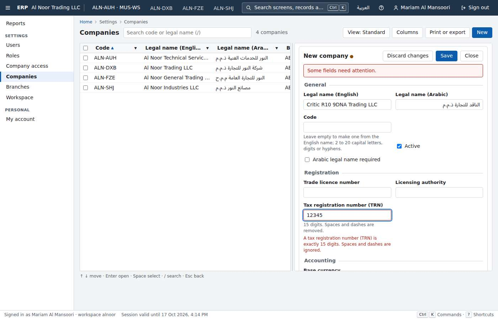

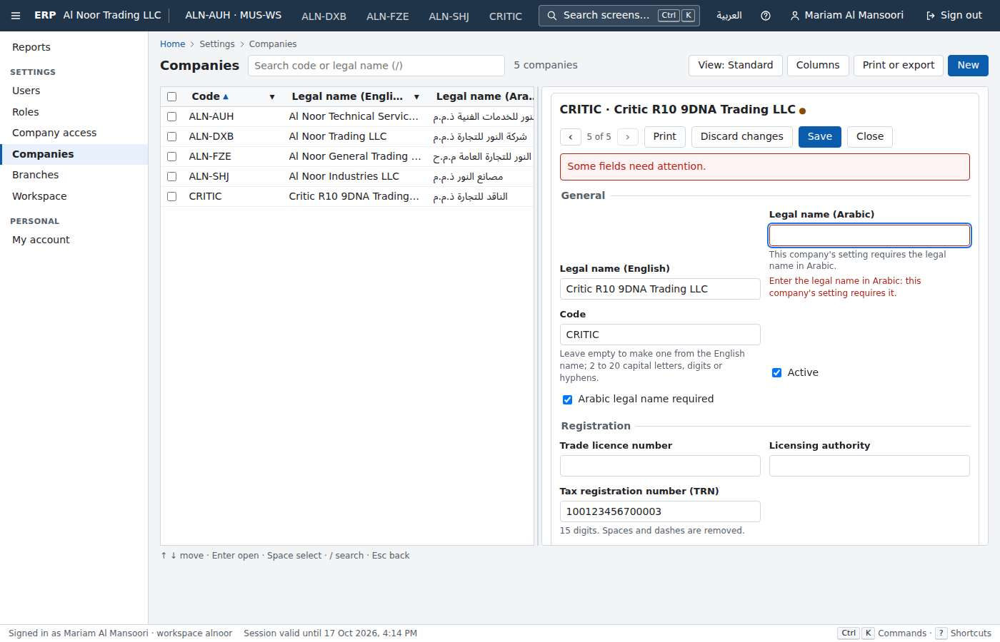

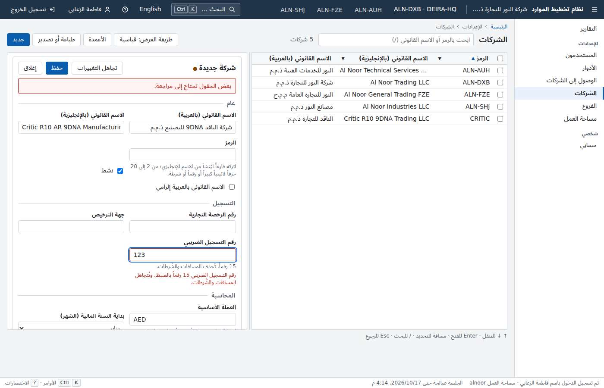

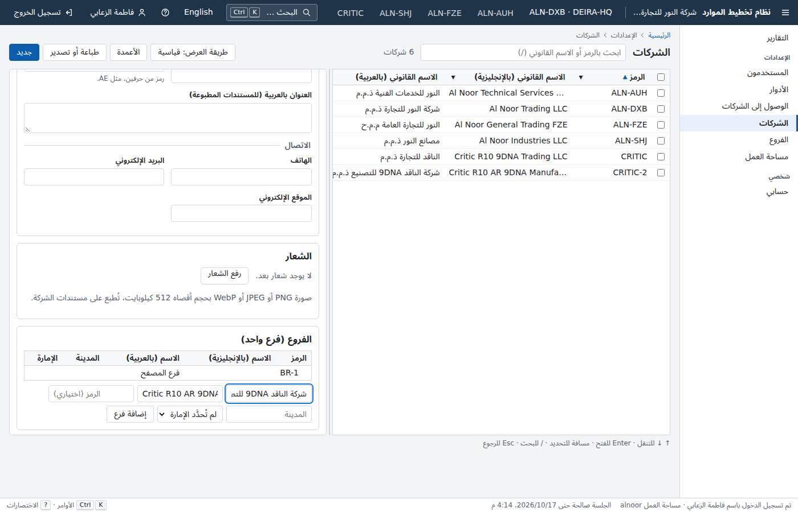

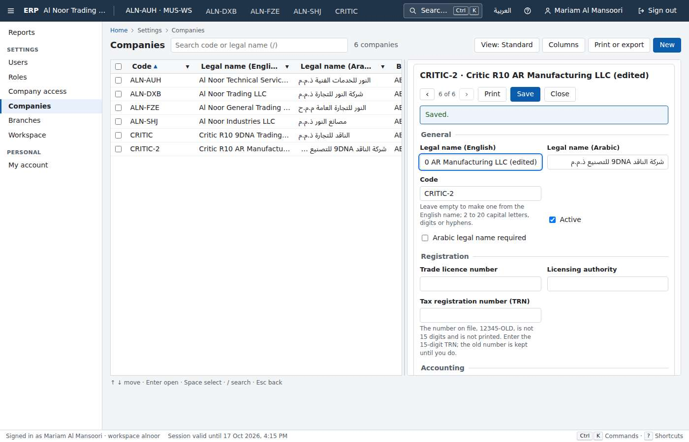

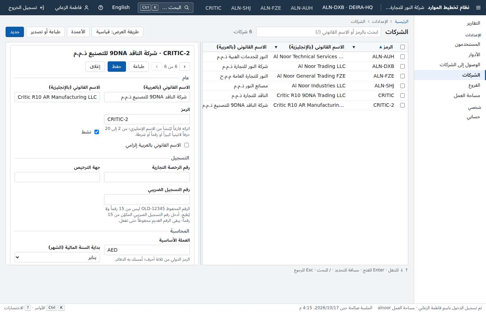

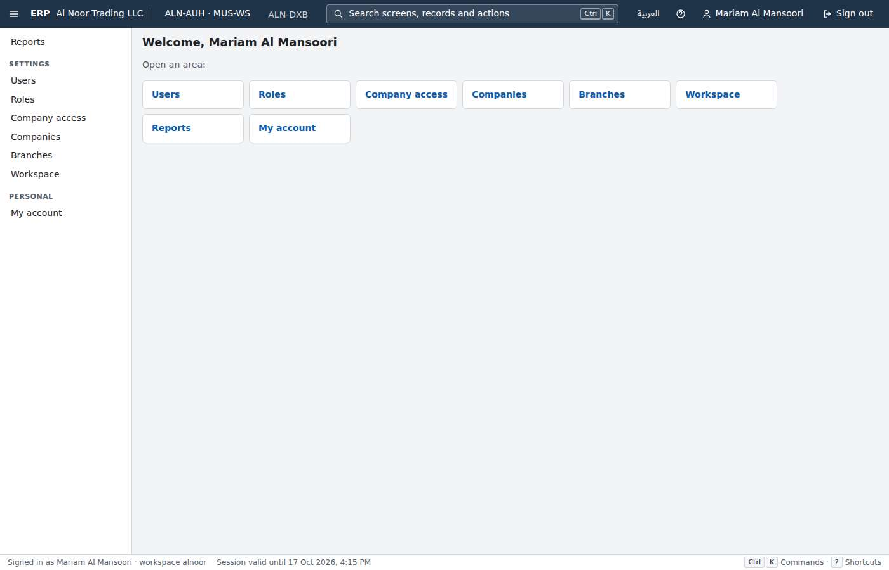

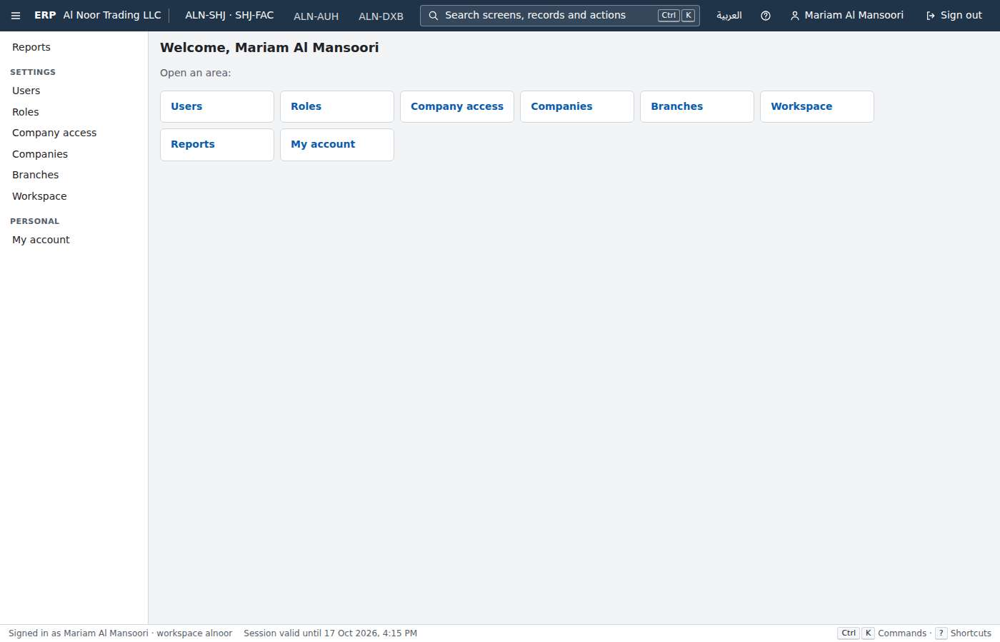
Round 10 · judged 2026-10-17T01:42:41Z · commit 322d0ef59e
Users, roles and permissions
Wave 1 · 9 rounds judgedIn Roles, the matrix's 'Other' column holds the permissions that are not view, create, change or delete. Today these are 'Reset other users' passwords' and 'Share list views with everyone'. As modules arrive, this column will hold post journal, approve, close period and the like. There, the checkbox renders 4.5 to 11.8 px wide, against 13 px for every other checkbox. It looks like a list bullet ('◦'), not a box, at every common screen width. In the system Administrator role, the ticked state is almost invisible. An administrator setting up a 'Sales clerk' or 'Storekeeper' role in a UAE trading or manufacturing company cannot see at a glance whether the risky grants are on. With a mouse they must hit a target a few pixels wide. Odoo's group and access screens show such rights as ordinary full-size toggles. Keyboard toggling works (Space), and the API is correct. So this is the screen failing the 'dense, Dynamics-style business screen' promise exactly where the stakes are highest. Cause: web/src/modules/identity/identity.css, .id-cell is display:inline-flex. The checkbox keeps the default flex-shrink:1 and is squeezed when the label beside it wraps. Fix: give the checkbox flex: 0 0 auto (or put the label under it). Add a screen test that every matrix checkbox renders at full size at 1280, 1600 and 1920 px.
- G1 tenant isolation of the product as built PASS — No leak found. API attack (attacks/g1-attack.mjs, g1-a-vs-b.txt): alnoor's admin made 1,049 judged calls against gulfsteel. They covered: - every identity, auth, list-view and report route in the OpenAPI, with each of 30 B ids (users, roles, companies, tenant, canary user and role); - B ids in body fields (roleIds, companyRoles, companyId, userIds, filter, search); - ?removePasskeys=true and ?passkeyId=; - the tenant-switch headers X-Tenant, X-Tenant-Id, X-Erp-Tenant and X-Workspace, and tenant/workspace query fields; - users and roles exports as CSV, XLSX and PDF in English and Arabic, and both identity reports. No B secret appeared in any body or header. Every B-id call answered 404, or a 400 that was identical for B ids, random ids and A ids (oracle.txt). A hash of B's identity state was the same before and after. 'All that match' with B's addresses or B's filter answered 409 'changed (1 then, 0 now)', and nothing in B changed (bulk.txt). The new sign-in pause (pause.txt, pause2.txt): - An attacker's 7 failures answer the same sequence (401 x4, then 429 with Retry-After) for an unknown address, a B-only address, an address in both tenants and a deactivated B account. - The owner, from their own browser (device cookie), still signs in with 200 after the attack. - The admin's history shows the paused client, and Unblock lifts it (204, then 200). Database, as erp_app (db-app-role.txt): - No tenant bound: 0 rows. Bound to A: 100,004 users, 0 from another tenant. - UPDATE of B's users changed 0 rows. INSERTs into B's sign_in_attempts and user_roles were refused by RLS. - The new platform tables sign_in_failures and sign_in_secret are refused to erp_app (permission denied). - verify_sign_in returns nothing inside a tenant-bound transaction. - row_security=off, SET ROLE erp_owner/erp_auth and DISABLE RLS were all refused. No erp role has bypassrls. - Every identity tenant table has RLS enabled and forced.
- G1 gate catches tenant leaks planted in this piece's surface PASS — Plants are in plants/apply-r10-plants.py and r10-plants.diff. L1: a process-wide memo in SignInService of each address's pause end, keyed by address only. Caught by G1ProcessStateTests ('static ...SignInService.PauseMemo: a read-only field that holds a mutable ConcurrentDictionary') and by G1SignInThrottleTests (the owner's own client answered 429) (plants/run1/dotnet-suite.log). L2: identity.verify_sign_in answers the workspace of the first account with the address instead of the one whose password matched, so a B password opens A. Run alone (plants/run-L2): caught by G1SignInThrottleTests.Failed_sign_ins_from_one_client_never_lock_the_account_out_for_anyone_else ('Expected bravo..., Actual alpha'). It is caught on every run whatever the salt order, because the gate signs in with both tenants' passwords. AuthTests also catches it.
- G2 permissions of the product as built (restricted roles, escalation, screens hide) PASS — Browser walk (walks/walk2.txt, screenshots 02, 04 and 05). A user created by keyboard with the Read-only role (Alt+N, 'read' Enter, Ctrl+Enter) signs in with the set-up code and chooses a password. Then: - they see no New user, and Alt+N opens nothing; - the palette offers nothing for 'new'; - a user record shows only Close, with read-only fields; - POST /api/identity/users and POST /api/identity/roles answer 403. The G2 suites in verify passed.
- G2 gate catches missing permission checks planted in this piece's surface PASS — Server plants: - S1 (round 9's P4 again: RevokeSessions skips the target check when removePasskeys=true). Run alone (plants/run-S1), G2AccountTakeoverTests.Acting_on_a_user_needs_every_permission_that_user_holds fails. The planted takeover ends the gate's own Administrator session, and the gate's next read (line 287) throws 401. Round 9's gap stays fixed. - S2 (Unblock skips the target check). Caught by G1CompanyIsolationTests ('POST .../unblock ... answered 204, expected a refusal') and by G2AccountTakeoverTests.Nobody_resets_their_own_password... ('unblock: an administrator aiming it at themselves answered 204'). - S3 (PUT default-company skips the target check). Caught by Acting_on_a_record_that_grants_access_needs_everything_it_grants (13 lines, 'answered 200 (expected 403)'). - S4 (DELETE passkeys?passkeyId= skips the target check). Run alone (plants/run-S4), caught cleanly: 'passkeyId=7bf9... aimed at the Administrator ... answered 200 (expected 403)' and 'the Administrator's passkeys changed'. Screen plants (plants/web-planted.log): - U2 (the palette's Sign out everywhere without allowed.signOutEverywhere) is caught by paletteActions.test.tsx. - U3 (the palette's Delete role without actions.delete) is caught: 'Delete role sent DELETE /api/identity/roles/r-clerk'. - U1 (the palette's 'Allow sign-in again' without requires signIns.read) is not caught (web-U1-only.log: 479 passed). It is not counted as a permission miss, because the role does allow unblock (POST /unblock needs identity.users.update only). It is a dead-end entry; see other findings.
- G3 clean clone: one command builds, migrates, seeds and passes all tests; one command runs the seeded demo PASS — Fresh clone of 5c66955. Verify: ERP_PROJECT=c-p03-identity-r10 with ports 20350, 20351, 20360 and 20361, through verify-slot. - 'slot 1 of 2 taken at 2026-10-17T08:54:24Z'; 'verify passed in 4253 s'; 'Ratchet check passed'. - Processor time 9,943 s against a maximum of 10,500 (dotnet 7,789, web 1,883, e2e 237, timing 35). - The wall time was not judged: the machine was busy with another verify at the same time, with load up to 90. Demo: ./erp up served the seeded 100,000-user demo in 72 s, and in 76 s with ERP_SEED_USERS_CSV. The project and ports are overridden through the environment, as the README documents.
- Rule gates (licences, decimal money, Arabic twins, audit) PASS — - The rule-gate tests passed in verify. The string check covers 777 keys in English and Arabic. - No dependency changed since round 9; only a package.json script was added. - No float in Identity. - audit.entries recorded every identity write, each with an actor. That includes my own probe's deletion of the never-signed-in admin.ar@alnoor.example (delete users, actor admin@alnoor.example). - The Arabic screens are right-to-left with Arabic labels. The only Latin text is e-mails, company codes, the 'English' switch and key names (walk5.txt; screenshots 10 and 12).
1606 / 1606 passed
0 failed · 0 skipped · 4253s
Clean clone → demo: PASS in 4253s
| Task | Ours | Odoo | Winner |
|---|---|---|---|
| create-restricted-user (named) | 5 · 37 · 1.87s · 20.91s | 10 · 46 · 7.011s · 30.05s | ours |
| find-user (find one user among 100,000) | 3 · 3 · 0.743s · 8.29s | 6 · 5 · 1.955s · 10.35s | ours |

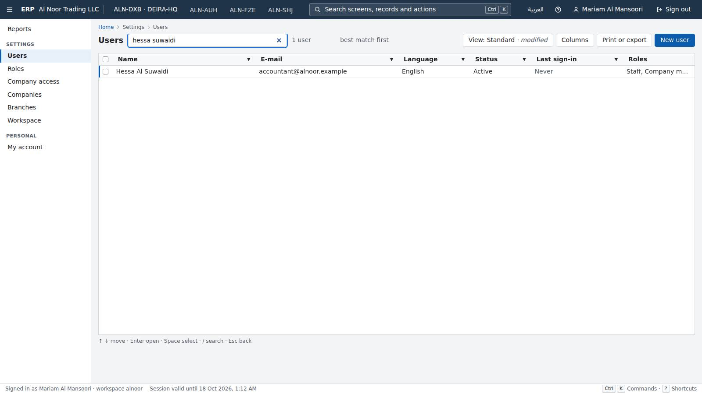

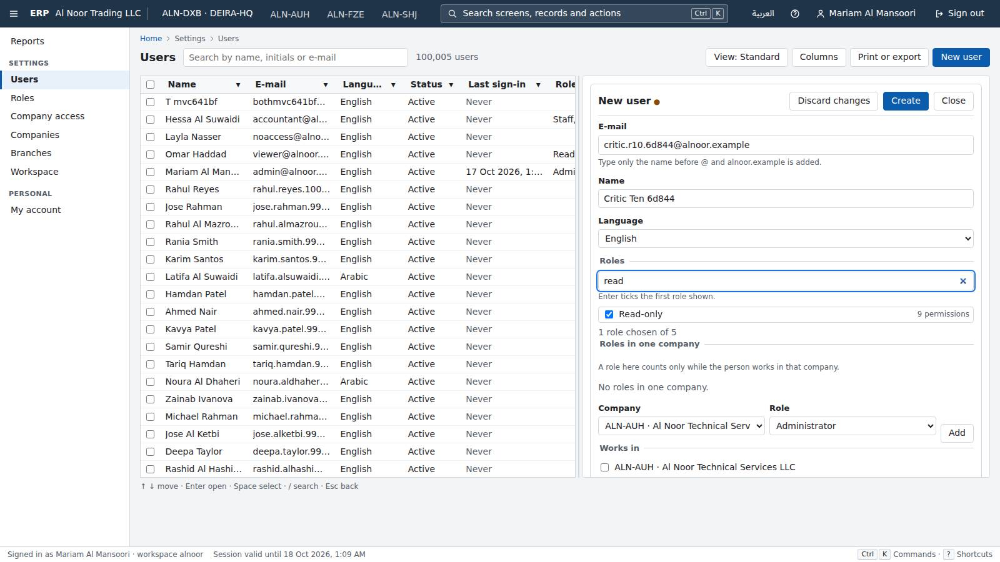

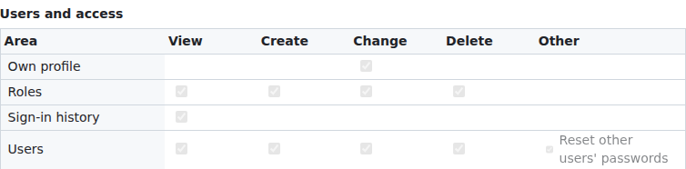

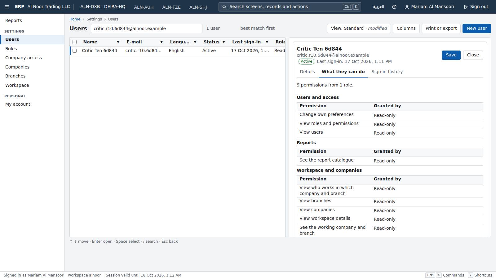

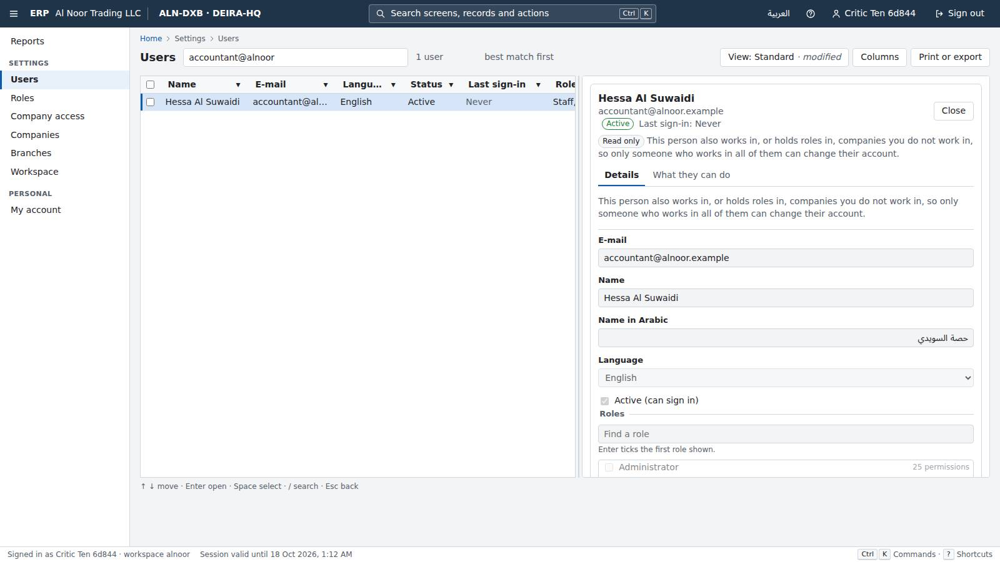

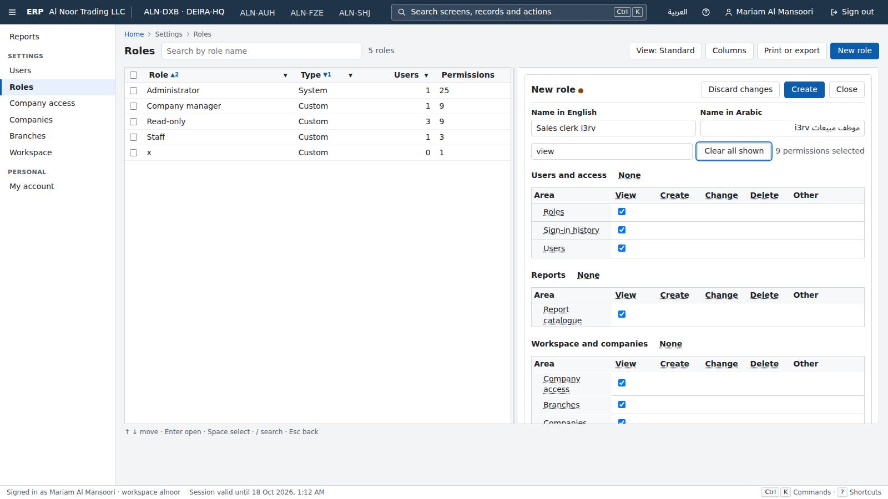

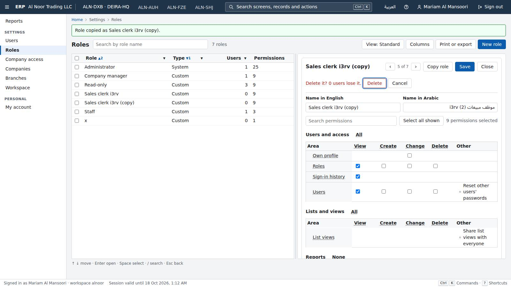

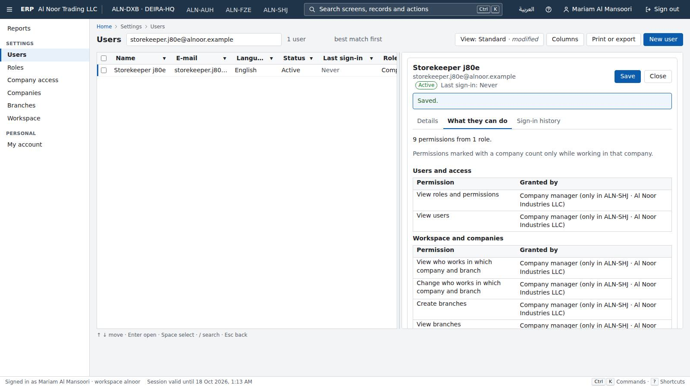
Round 10 · judged 2026-10-17T11:30:10Z · commit 5c66955f06
English/Arabic app shell
Wave 1 · 7 rounds judgedRound 9 closed round 8's gap: response headers are now compared, configuration is sealed, and a changing count in a header is caught by the change probe (my L5 was caught). But NonInterference.NormalizeHeaders still replaces the value of every Set-Cookie with <value> and every time in any header with <time>. The change probe compares the same normalised answers, so it sees no change either. A process-wide count sent in a cookie, or the time of another tenant's last action sent in a header, is invisible to all three G1 checks. The marker attack looks only for B's ids and names, and ProcessState does not see state kept outside the process (a temp file, a shared cache). I planted both kinds on PUT /api/identity/me/preferences, the shell's own Arabic-switch endpoint. All 169 gate tests passed, and on the running build tenant A watched tenant B's activity: A's count went from 2 to 8, and A saw the exact time of B's last switch. Real code produces exactly this: rate-limit or 'last activity' cookies, Last-Modified or ETag-style timestamps of shared caches, and 'recently changed' stamps. Every later module (invoices, stock, journals) inherits the blind spot. The machinery is shared with p00, but the fault sits on p04's surface, as in r8. Fix: (1) In NormalizeHeaders, blank only the values of the product's own reviewed credential cookies (the session and trusted-device cookies, from a reviewed list). Compare every other cookie value, and feed changing values to the change probe. (2) Replace times only in Date and the declared print stamp. Leave every other time in a header as sent, and judge it by how it changes (alone against with the other tenant in between, with a pause between calls). Apply the same to times in bodies. (3) Add both plants to the non-interference self-tests, with a ratchet count of cookie values compared.
- G1 tenant isolation (gate self-test on this piece's surface) FAIL — The product itself showed no real leak. I probed as Al Noor against Gulf Steel with 65 requests (isolation-probe.txt) and found 0 of 26 B markers. The requests covered user records and their sub-resources (access, default-company, sign-ins, passkeys), companies and branches, the company logo file path, the company-profile report in Arabic, the workplace switch to B's company, B's roles and role copy, and B's saved view (own and shared). They also covered PUT /me/preferences in all four language/digit combinations with B's ids in the body and tenant headers, tenant query parameters, and CSV, XLSX and PDF prints in Arabic. A non-marker check also passed: A's preference answers, headers included, did not change after B switched five times. Copy-role answers 404 for B's id and for a random id. All 17 tenant tables have RLS enabled and forced. erp_app is not superuser and has no BYPASSRLS. With no tenant context it sees 0 users. The fix for the r8 gap holds: plant L5 (a process-wide count kept in a temp file and sent in a response header) was caught by G1NonInterference, with 8 findings in both directions, English and Arabic (plants-B2b-L5-gates.log). MISSED: plants L4 and L6 on PUT /api/identity/me/preferences, the shell's own endpoint (plant-server-B1-L4-L6.diff). L4 sends the count of every tenant's Arabic switches back as a cookie value. L6 sends the time of anyone's previous switch in a header. All 169 gate tests passed with them in place, including G1NonInterference (9 m 57 s), G1HttpIsolation (31 m 8 s) and G1ProcessState (plants-B1-gates.log). On the planted build tenant A's cookie went from 2 to 8 while tenant B switched five times. A's header also gave the exact time of B's last switch (plant-B1-live-demo.txt).
- G2 permissions (gate self-test on this piece's surface) FAIL — Three of four plants were caught. P3 declared identity.profile.update on the preferences endpoint as metadata but enforced only sign-in; the host refused to start (plants-B2-L5-P3-gates.log). P5 offered go-to keys for screens the user's navigation does not list; goTo.test.tsx caught it with 3 tests. MISSED: P4, which removes the palette's check of an action's further permissions ('requires', new in r9) (plant-client-P4-requires-ignored.diff). All 470 web unit tests still passed (plant-client-P4.log), and no e2e or .NET gate covers it. With the plant, a user who holds users.read and users.update but not identity.signIns.read is offered 'Allow sign-in again' (unblock), which runs through the history tab they cannot see. The real build offers that user only 'Print users' (plant-client-P4-demo.log). In the browser at the commit, the viewer gets 'Nothing matches' for 'new', and the no-access user gets only Home plus shell actions; the r8 minor (focus-navigation offered to them) is fixed. The verify's own plant self-tests all passed.
- G3 clean clone: one command builds, migrates, seeds and passes all tests; one command runs the demo PASS — Fresh clone at a2c3400. The verify took slot 1 at 2026-10-16T23:29:48Z and printed 'verify passed in 3486 s'. Processor time was 9,078 s against the 10,500 s maximum, and the ratchet passed. .NET ran 608 tests, web unit 470, e2e 102, compare 373 and build 6, all passed with 0 skipped. ./erp up served the seeded demo (100,005 users in Al Noor, 101,010 across tenants) in 69 s on port 20450 under project c-p04-shell-r9. Ports and the project were overridden through ERP_* variables as documented.
- Rule gates (licences, decimal money, EN/AR string twins, audit) PASS — These ran inside the verify (608 .NET tests, npm run check) and passed. In the database, every preference change wrote an audit.entries row with actor, time, record and old/new language. The fonts are OFL-1.1, which the owner approved on 2026-10-03 (needs-human #5), and they are listed in tests/Gates/font-licences.txt.
1559 / 1559 passed
0 failed · 0 skipped · 3486s
Clean clone → demo: PASS in 3486s
| Task | Ours | Odoo | Winner |
|---|---|---|---|
| switch-to-arabic | 1 · 0 · 0.112s · 2.65s | 6 · 1 · 2.618s · 15.28s | ours |
| reach-screen-keyboard | 2 · 2 · 0.128s · 3.66s | 3 · 8 · 0.923s · 3.99s | ours |
| open-third-user-keyboard (critic-added r2, kept) | 6 · 6 · 0.267s · 6.13s | 8 · 13 · 1.6s · 6.74s | ours |
| new-user-keyboard (critic-added r7, kept) | 3 · 4 · 0.168s · 5.57s | 4 · 10 · 1.34s · 5.9s | ours |
| keyboard-navigation (open the third contact by keyboard) | – | – | not-compared |

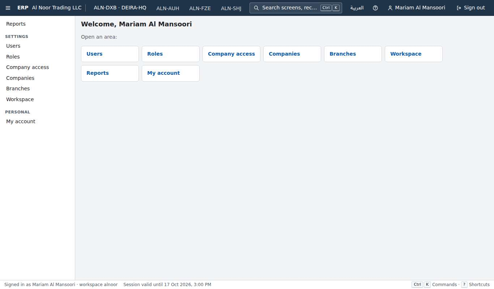

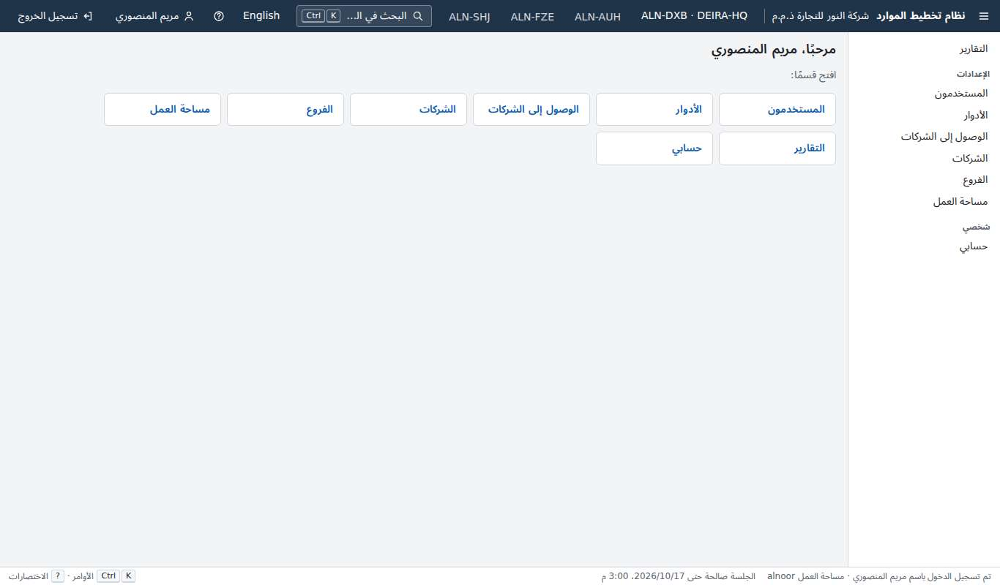

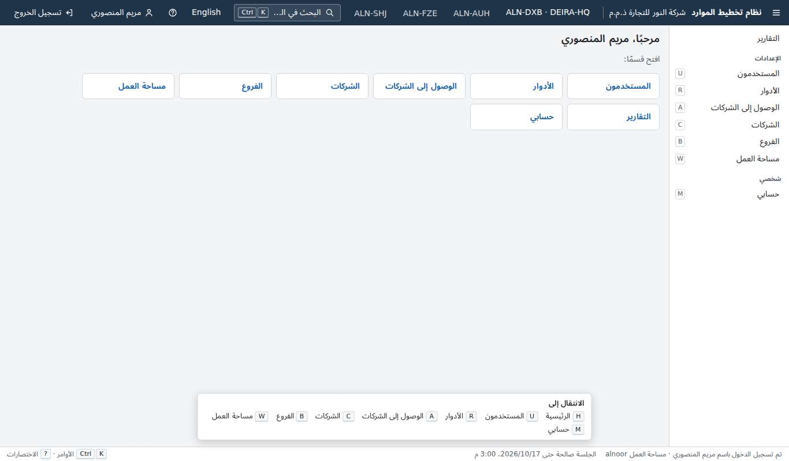

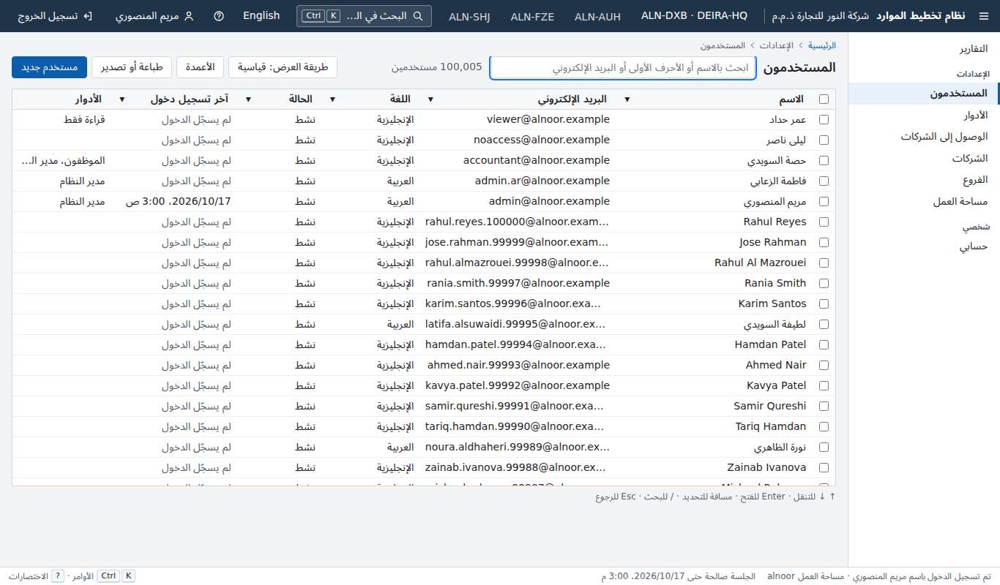

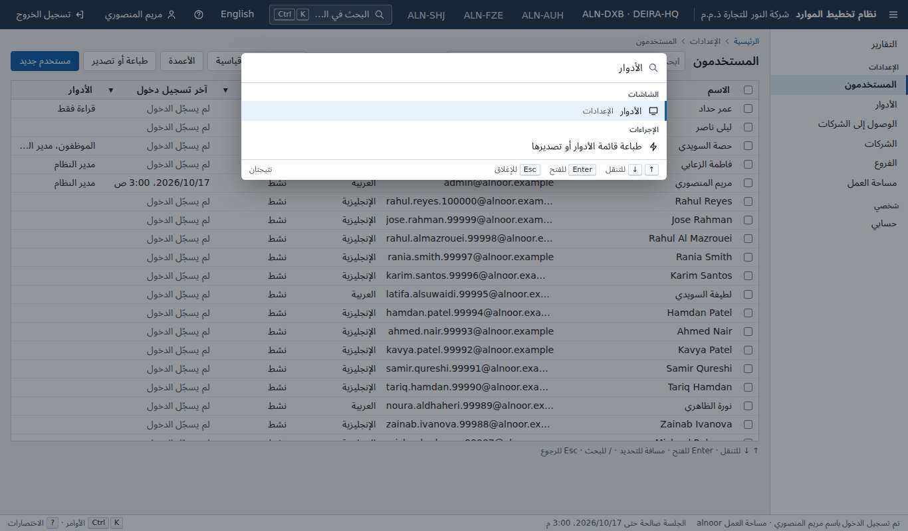

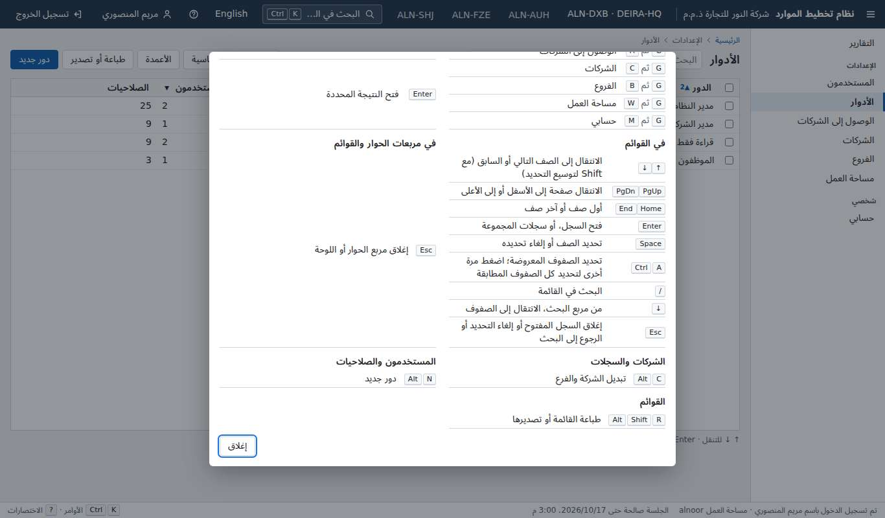

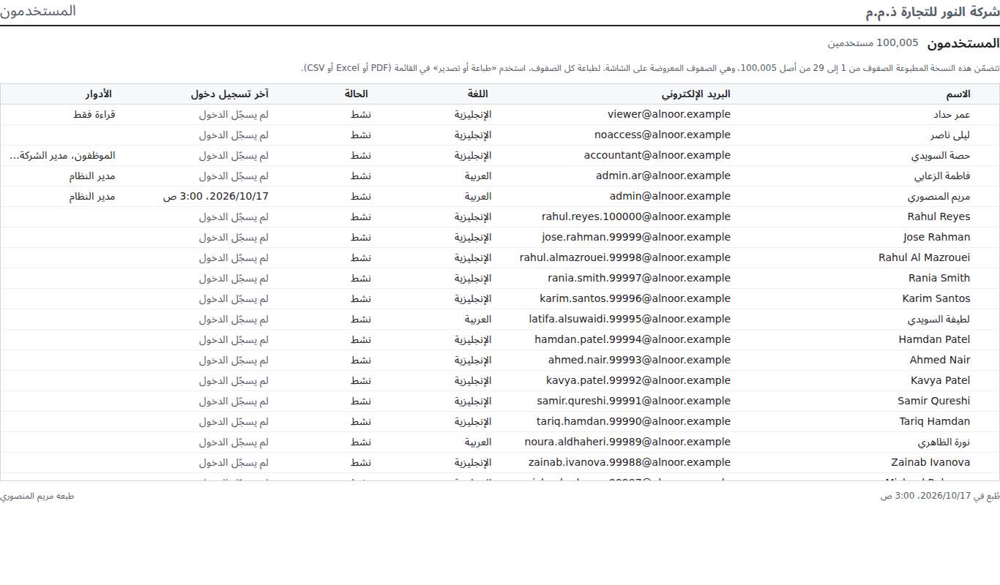

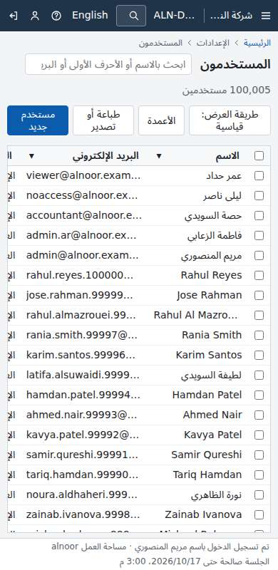
Round 9 · judged 2026-10-17T00:28:28Z · commit a2c3400178
List and search framework
Wave 1 · 5 rounds judgedp05 promises that every list registered with the framework is attacked automatically by G1. Every later module (Contacts, invoices, stock) relies on that promise for its 100,000-row lists. But every gate environment is SeedPlan.Gate with 25 users per tenant. ListAnswers, NonInterference and HttpIsolation judge totals carefully: sorted, keyset, offset, grouped, both directions. They do it only at a volume where no 'large list' code path ever runs. The most natural optimisation for a 100,000-row list is to stop counting exactly and show an estimate. The estimate PostgreSQL offers (pg_class.reltuples, pg_stat_user_tables.n_live_tup, EXPLAIN row estimates) covers every tenant, because row-level security does not apply to catalog statistics, and erp_app can read them. Plant L12 does exactly this past 10,000 rows. Nothing structural flags it either: ProcessState only sees in-process state, and TenantSource and ReviewedLookup do not look at catalog reads. Fixes: (a) judge list answers also against a tenant pair where both tenants hold a demo volume of rows (the timing stage's 100,000-row fixture exists already). Sending each list's unfiltered, sorted, offset and grouped query as the smaller tenant, the total must equal its own row count. (b) Add a source or SQL-trace rule: product code and the SQL it runs in a request may not read pg_class, pg_stat*, pg_statistic or EXPLAIN output, unless that is reviewed. (c) Keep the volume threshold out of reach of a gate that only seeds tens of rows: give the gate a 'large list' profile.
- G1 tenant isolation (product as built) PASS — The gate suite is green inside verify. I attacked as admin@gulfsteel against alnoor (100,005 dataset users) with 27 targeted probes and found 0 leaks (attack-api.txt). The probes covered needle e-mail, name and Arabic searches, eq and OR filters, quote injection, % and _ wildcards, X-Tenant headers, tenantId query parameters, groupBy, skip=99000, a replayed alnoor cursor, alnoor's user id, GET/PUT/DELETE of alnoor's shared view through both route kinds (all 404, and the view stayed), the views list, the definition, CSV/XLSX/PDF list prints, and the bulk 'matching' count oracle (409 with gulfsteel's own count). I then ran 257 probes over all 5 registered lists (users, roles, companies, branches, access): unsorted and sorted, each with alnoor's ids, e-mails and names as searches. That found 0 leaks (attack-api-lists.txt). In the database (db-inspect.txt), lists.saved_views has RLS enabled and forced with tenant_isolation. erp_owner, erp_app and erp_auth have no superuser and no BYPASSRLS. Unbound, erp_app sees 0 users and 0 views. Bound to gulfsteel, it sees 1,005 users, 0 alnoor users and 0 alnoor views, and an UPDATE of alnoor's views touches 0 rows.
- G1 catches tenant leaks planted in p05's surface FAIL — Plant L12 (L12-estimated-total-from-table-statistics.patch, about 25 lines in ListBinding.QueryAsync) is a common optimisation for big lists. When a list has no search and no filter and the table holds more than 10,000 rows, the total shown is pg_class.reltuples, the planner's estimate of the whole table across every tenant, instead of count(*). All 56 G1 tests PASSED with it, run in the product's own toolbox image: ProcessState, TenantSource, ReviewedLookup, NonInterference (17 min), HttpIsolation/ListAnswers (34 min) and WriteOracle (run-L12-g1-all.log, 04:44 to 05:18Z). Live on a plant stack (plant-live-L12.txt), gulfsteel's GET /api/identity/users (unfiltered, and sorted) answers total 101,010, which is every tenant's users. Gulfsteel has 1,005, and the same rows through a filter that matches everything say 1,005. Alnoor sees 101,010 too, against its real 100,005. On screen, gulfsteel's Users list header reads '101,010 users' (plant-L12-gulfsteel-users-shows-all-tenants-total.jpg). The blind spot: every gate environment seeds 25 users per tenant (SeedPlan.Gate), so the list-answer gates never reach a volume where a volume-dependent code path runs. No structural rule forbids product code from reading cross-tenant catalog statistics (pg_class, pg_stat_*, EXPLAIN row estimates). Kept fixed from round 7: plant L11 (file-local static memo) is now caught by ProcessState (run-r7-plants-L11-P6-regression.log).
- G2 permissions (product as built) PASS — The gate suite is green. In the browser, viewer@alnoor's save dialog has no share box (ui-scope.txt), and the viewer opens Users on the administrator's shared default view (09-viewer-opens-shared-default.jpg). Live on the P8 plant stack, before the plant path ran, the viewer's direct POST /shared-views answered 403 and the definition said canShare false (plant-live-P8.txt).
- G2 catches unpermissioned actions planted in p05's surface FAIL — Plant P8 (P8-personal-route-creates-shared-view.patch, 6 lines in ViewEndpoints.cs) adds an isShared body field to SaveViewRequest. It is documented in the hand-written view schema, as a 'Share with the team' box in the save dialog would need. Create() honours the field on POST /views, which declares only the list's read permission, so lists.views.share is never checked. All 36 G2 tests PASSED (run-P8-g2-all.log), including Every_list_endpoint_needs_the_lists_own_permission_and_shared_view_writes_need_sharing. All 39 Rules tests PASSED (run-P8-rules.log). Live (plant-live-P8.txt): viewer@alnoor has canShare false and gets 403 on POST /shared-views. Yet POST /views {isShared:true,isDefault:true} answers 201 isShared true isDefault true. The viewer's view replaces the workspace's 'Team view' as the shared default that every user opens. The blind spot: the G2 list test builds view bodies from a fixed field list (PersonalBody/ViewRequest) and never from the request schema. FieldVariants, which does derive fields from the schema, runs only for grant-bearing records and account takeover. Kept fixed from round 7: plant P6 (a personal default clears the shared default) now fails the G2 list test (run-r7-plants-L11-P6-regression.log).
- G3 clean clone PASS — I cloned 35ba5bc fresh and ran ERP_PROJECT=c-p05-list-search-r9 ERP_HTTP_PORT=20550 ERP_DB_PORT=20551 ERP_VERIFY_HTTP_PORT=20560 ERP_VERIFY_DB_PORT=20561 through verify-slot.sh ./erp verify. It passed in 4067 s from 'slot taken' (04:34:14Z, no wait). Processor time was 9556 s against a maximum of 10500. The ratchet passed: .NET 550, web 392, e2e 89 and compare 353, each at its minimum (verify-critic-p05-list-search-r9.log). The wall time is over the 3600 s quiet-machine figure, but it was not judged because the machine was busy (my plant run of G1 ran beside it, and other agents' load was up to about 75). A plain ./erp up gave the seeded 100,005-user demo in 108 s (up-critic-p05-list-search-r9.log). With ERP_SEED_USERS_CSV it took 100 s (up-dataset-…log). The port and project overrides worked.
- Rule gates (licence, money, strings, audit, list index) PASS — Green inside verify. The string check passed (711 keys in English and Arabic). The users list has trigram GIN indexes on display_name, email_normalized and display_name_ar, and (tenant_id, column, id) indexes for sorting (db-inspect.txt). Saved-view writes leave audit rows with the actor and old and new values (11 insert and 1 delete after my browser session).
1384 / 1384 passed
0 failed · 0 skipped · 4067s
Clean clone → demo: PASS in 4067s
| Task | Ours | Odoo | Winner |
|---|---|---|---|
| find-user (find one user among 100,000; p16 Contacts is not built, so the dataset's 100,000 users) | 3 · 3 · 0.579s · 8.29s | 6 · 5 · 1.149s · 10.35s | ours |
| find-record (find one contact among 100,000) | – | – | not-compared |


Round 9 · judged 2026-10-10T05:52:04Z · commit 35ba5bc166
Form and report framework
Wave 2 · 6 rounds judgedEditing a record is the most frequent thing every later module will do with this form framework: a phone number, a price, a quantity. Against Odoo's real expert path the form no longer wins. The harness drives Odoo with click > Ctrl+A > type > Save (4 steps, 19 keys), so it scores ours (click > type > Enter: 3 steps, 18 keys) as a win. An Odoo expert instead triple-clicks the field, types and clicks Save: 3 steps, 17 keys. I verified this path live on the reference rig. Ours ties on steps on every path. On keystrokes it loses (18, Enter path) or ties (17, pointer path). A tie is a loss. Ours needs a path that is strictly shorter in both. The UAE-specific way is a phone field type in the form kernel that keeps the country code (+971) and takes only the national number. The task would then need 10 digits plus spaces instead of 16 characters and Shift, which is clear of any Odoo path, and every later module's phone fields would gain the same. (A general alternative: save with no key and no step, for example save-on-leave, but that changes the dirty/leave model.) Separately, the instrument should gain a counted triple-click so the harness measures Odoo's real shortest path (route p01).
- G1 tenant isolation (product as built) PASS — Every G1 test passed inside verify. I also attacked the live demo myself from the API (tools/attack.mjs, api/attack-print-surface.txt). That was 124 print shapes over every report and printable list: combined parameters, tenant B's record ids with disposition=inline and numerals=arab, empty-result searches, and column subsets. Each ran in json/csv/xlsx/pdf × en/ar, plain and with X-Tenant-Id/X-Tenant and X-Company-Id/X-Branch-Id headers. Of 2,976 gulfsteel answers (2,688×200, 288×404), none held an alnoor marker and no PDF was byte-identical to alnoor's. Database, checked with ./erp psql: erp_owner, erp_app and erp_auth have no superuser and no BYPASSRLS. All 17 tables with tenant_id have RLS enabled and forced. The only tables without tenant_id are the migration histories and identity.sign_in_secret. erp_app with no tenant bound sees 0 users and 0 companies.
- G1 catches faults planted in p06's surface PASS — Round 5's misses are now caught. I applied round 5's L7b (inline-viewer PDF spool keyed without tenant) and P10 (saved-view print names roles) to dcdbe1ce: G1HttpIsolation fails with 20 leaks (tenant A sends tenant B's own companyProfile request with disposition=inline and receives CNRY marker), and G2ReportData fails (plants/run-L7b-P10.log, 140/142). New plant L8 (plants/plant-new1-L8-P11.diff) is a content-addressed PDF render cache on disk whose key leaves out the issuer and who printed it, so it collides only on documents with identical content, such as empty results. G1HttpIsolation catches it with 763 leaks ('an answer shape tenant B asked for first', search=bravocnry… PDFs). G2ReportData catches it too (plants/run-L8-P11.log).
- G2 permissions (product as built) PASS — All G2 tests pass inside verify. Live checks: the viewer's company form has 21 of 21 fields disabled, no Save button and the 'Read only' reason. Enter, Ctrl+S, Ctrl+Enter, Alt+Z, Delete and Alt+N sent no write (browser/explore.log, 03).
- G2 catches faults planted in p06's surface PASS — P11: the letterhead prints the working company's legal name without the companies.read/workplace.read check (ReportEngine.IssuerAsync). It was caught: G2ReportData reports 'identity.roleSummary … as a user holding exactly [identity.roles.read] … prints التجارة, which no other endpoint those permissions open shows' (plants/run-L8-P11.log). P13: a report printed with disposition=inline ignores withheld columns (plants/plant-P13-…diff). It was caught: companyProfile with only tenancy.companies.read prints branch columns needing tenancy.branches.read (plants/run-P13.log, 41/42). W3: kernel form fields and sections stay editable for a read-only user (plants/plant-W3-…diff). It was caught: vitest 10 failed / 468 passed, including forms.test 'shows a record read-only' and the identity keyboard sweeps (plants/run-W3-vitest.log).
- G3 clean clone PASS — I made a fresh clone at dcdbe1ce with project c-p06-form-report-r6 and ports 20650/20651/20660/20661, set through the documented ERP_* variables, and ran `./erp verify` through verify-slot.sh. The slot was taken at 06:25:50Z and the run passed in 4,392 s wall time. That was not judged: the machine was busy, with load up to 98, another workflow's verify and my plant runs alongside. Processor time was 10,052 s of the 10,500 s maximum. 628 .NET, 478 web unit, 102 e2e, 373 compare and 6 build tests passed, and the ratchet passed. `ERP_SEED_USERS_CSV=… ./erp up` brought up the seeded demo (100,005 users) in 37 s (up.log).
- Rule gates (licence, money, strings, audit, reports) PASS — They pass inside verify (string check: 776 keys in English and Arabic; accessibility check: 1,113 JSX elements). Form saves leave audit rows: audit.entries holds old/new phone values and the actor for each company PUT.
1587 / 1587 passed
0 failed · 0 skipped · 4392s
Clean clone → demo: PASS in 4392s
| Task | Ours | Odoo | Winner |
|---|---|---|---|
| edit-and-save | 3 · 18 · 0.209s · 8.09s | 3 · 17 · 0.419s · 10.28s | odoo |
| arabic-report | 2 · 0 · 0.105s · 5.3s | 6 · 0 · 4.627s · 15.9s | ours |
| print-list-arabic | 3 · 13 · 0.593s · 11.09s | 5 · 32 · 6.467s · 19.06s | ours |

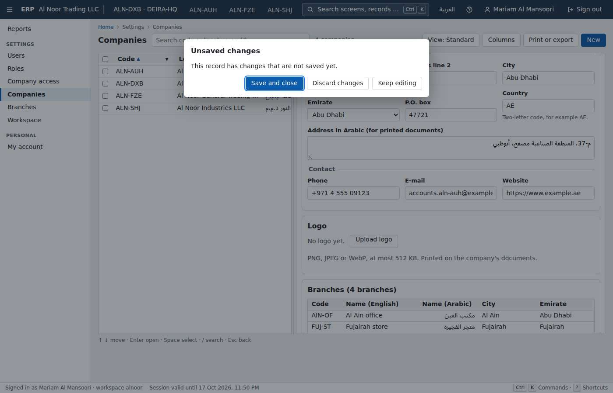

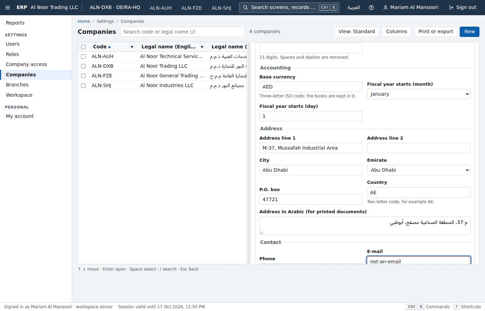

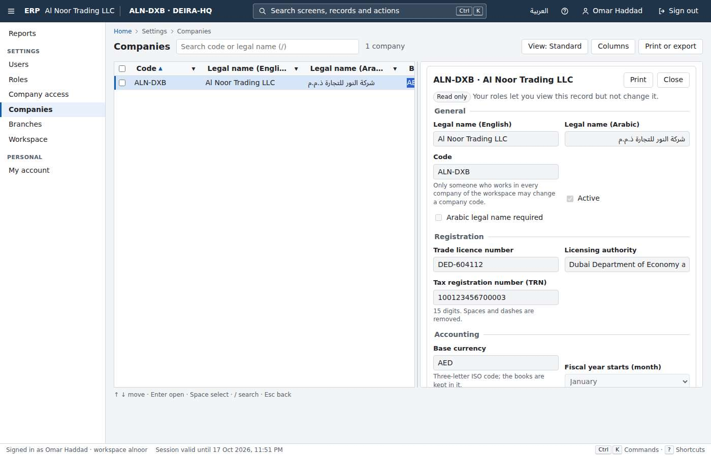

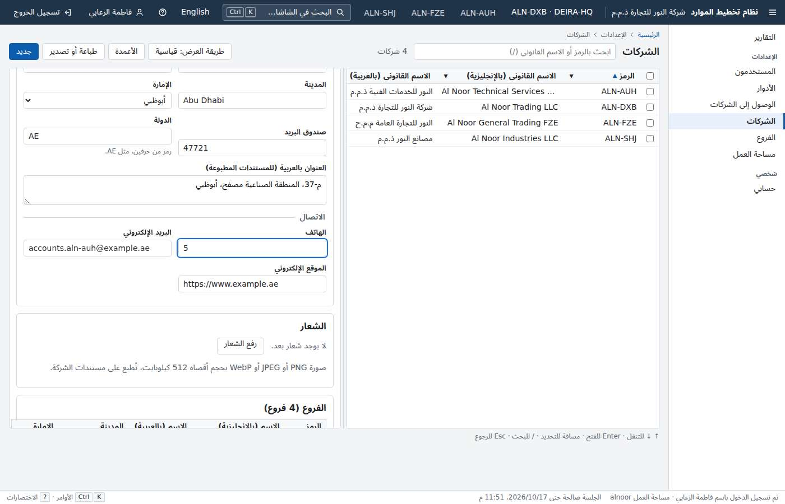

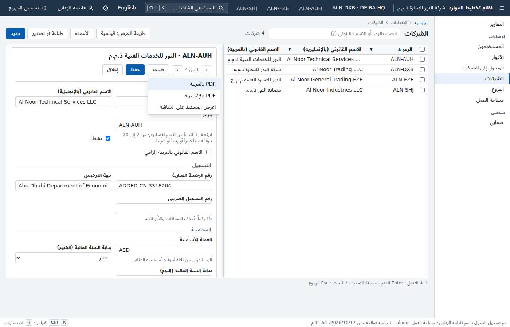

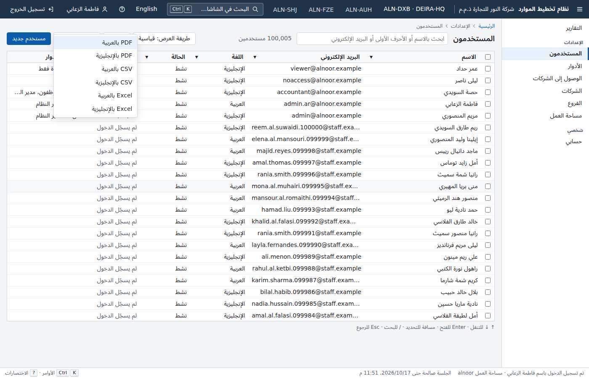

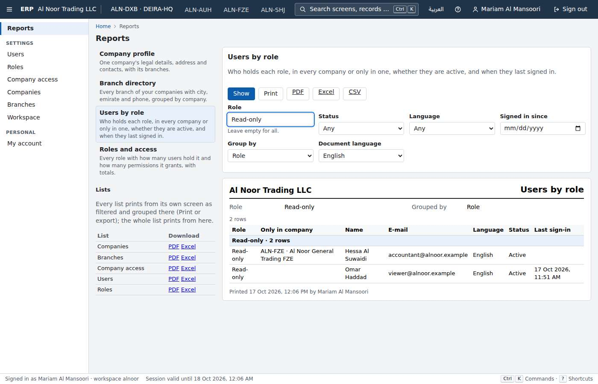

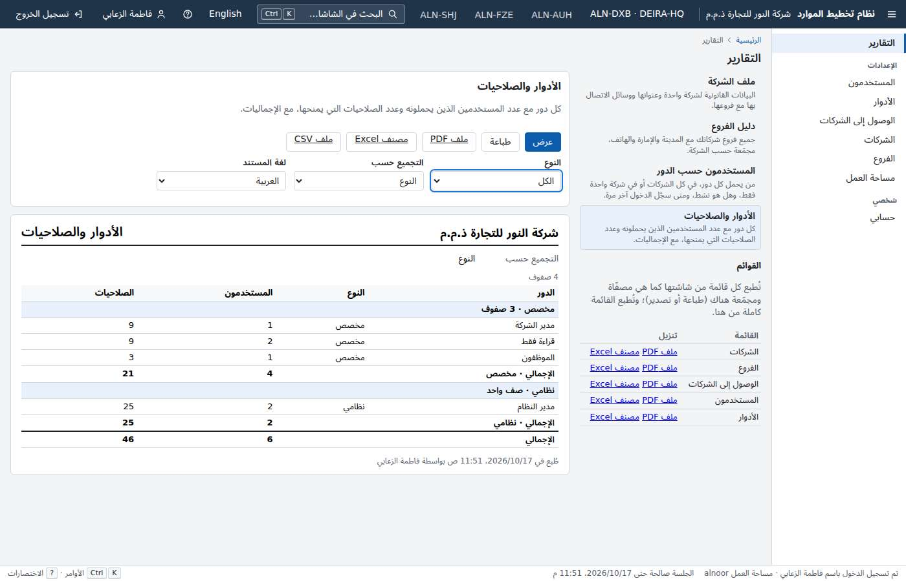
Round 6 · judged 2026-10-17T08:34:09Z · commit dcdbe1ce
Audit trail
Wave 2 · 0 rounds judgedWaiting for its first critic.
Multi-currency
Wave 2 · 0 rounds judgedWaiting for its first critic.
Tenant-defined custom fields
Wave 2 · 0 rounds judgedWaiting for its first critic.
Document numbering
Wave 2 · 0 rounds judgedWaiting for its first critic.
Attachments
Wave 2 · 0 rounds judgedWaiting for its first critic.
Background jobs
Wave 2 · 0 rounds judgedWaiting for its first critic.
Approval flows
Wave 3 · 0 rounds judgedWaiting for its first critic.
Import and export
Wave 3 · 0 rounds judgedWaiting for its first critic.
Documented API for everything
Wave 3 · 0 rounds judgedWaiting for its first critic.
Shared Contacts directory
Wave 2 · 0 rounds judgedWaiting for its first critic.